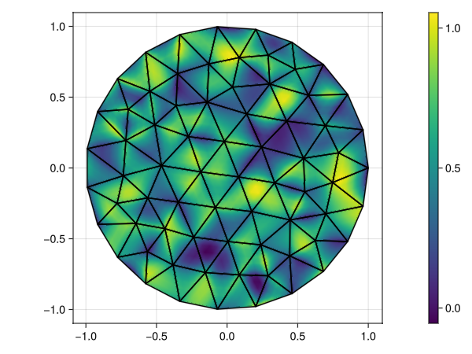
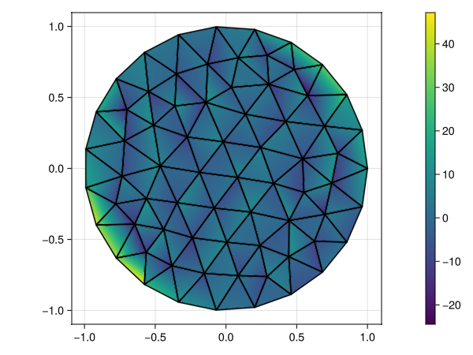

Introduction to FEM
by Francesc Verdugo (VU Amsterdam)
In this tutorial, we will learn:
- The gist of the finite element method (FEM).
- How to solve a simple partial differential equation (PDE) with it.
- How to express the key concept in code using GalerkinToolkit.
- How to validate the code using the method manufactured solutions.
This tutorial is useful even if you are a FEM expert if you want to learn GalerkinToolkit. It will walk you through the key parts of the library.
This tutorial is made available under a CC BY 4.0 license. The API documentation and source code of GalerkinToolkit is available under an MIT license.
Problem statement
In this tutorial, we show how to solve a simple PDE with the FEM. To make this introduction really an introduction we consider what is considered the "hello, world" PDE: the Poisson equation. Our goal is to solve the Poisson equation with Dirichlet boundary conditions on a given domain $\Omega\subset\mathbb{R}^d$ with $d$ being the number of spatial dimensions ($d=2$ in this example). This problem is formalized as finding the function $u:\Omega\rightarrow\mathbb{R}$ such that
\[\left\lbrace \begin{aligned} -\Delta u = f \ &\text{in} \ \Omega,\\ u = g \ &\text{on}\ \partial\Omega,\\ \end{aligned} \right.\]
where $\Delta u = \sum_{i=1}^d \partial^2 u / \partial x_i^2$ is the Laplace operator and $f$, $g$ are two given functions $f,g:\Omega\rightarrow\mathbb{R}$. The boundary condition $g$ applies on the boundary of $\Omega$, which is denoted as $\partial\Omega$. For simplicity, we will define $\Omega$ as a disk of radius one. This is a simple geometry, but yet more complex than a two-dimensional box. We this, we illustrate that FEM can be used to solve PDEs on complex geometries beyond simple "boxes".
The method of manufactured solutions
We are going to select $f$ and $g$ in such a way $u$ is a known function. This will allow us to compare the numerical approximation computed with FEM against the theoretical exact solution $u$. This technique is known as the "method of manufactured solutions". Let us, "manufacture" $f$ and $g$ such that function $u(x)=(\sum_{i=1}^d x_i)^p$ is the solution of the PDE above. The scalar $p$ is a given integer $p>0$. It will be useful to see how the numerical solution will behave for different values of $p$.
To manufacture function $f$ and $g$ we applying the PDE operators to the given function $u$. That is, $f$ needs to be computed as $f= -\Delta ((\sum_{i=1}^d x_i)^p)$ and $g$ is simply $g(x)=(\sum_{i=1}^d x_i)^p$. Applying the Laplace operator to $(\sum_{i=1}^d x_i)^p$, we get the closed-form expression for $f$, namely $f(x)= -p(p-1)(\sum_{i=1}^d x_i)^{(p-2)}$.
Numerical approximation
The FEM transforms a PDE into a system of linear algebraic equations of the form $Ax=b$, where $A$ is a matrix and $b$ is a vector. This reduces the problem of finding function $u$ to finding vector $x$, which can be done on a computer using arrays and other numeric data structures. To do this, FEM does not look for the exact function $u$, but for approximations of it that can be written as a linear combination of a finite number of basis functions, namely
\[u^\mathrm{fem}(x)=\sum_{j=1}^N \alpha_j s_j(x),\]
where $\alpha_i$ are the coefficients of the linear combination, $s_i$ are functions such that $s_i:\Omega\rightarrow\mathbb{R}$ and $N$ is an integer. The basis functions $s_i$ are also called "shape functions" or "hat functions". The goal of FEM is to find suitable values for $\alpha_i$ and $s_i(x)$ such that $u^\mathrm{fem}$ is a good approximation of the exact solution $u$, namely $u^\mathrm{fem}(x)\approx u(x)$ for points $x\in\Omega$. Spoiler alert: the more computational effort we put in building function $u^\mathrm{fem}$ the better will be the approximation.
Workflow
Function $u^\mathrm{fem}$ is built as follows. First, we define the auxiliary functions $s_i(x)$. This step is often referred as the "numerical discretization" and entails defining a computational mesh and a finite element (FE) function space. The next step is building a system of linear algebraic equations $Ax=b$. This step is called the "FEM assembly". Then, one solves for the vector $x$ in what is called the "solver" or "solution" step. At this points, the coefficients $\alpha_i$ can be computed using both vector $x$ and the Dirichlet boundary conditions of the PDE. The final step is typically some post-process of function $u^\mathrm{fem}$. For instance, visualize it, store it into a file, compute some quantity of interest, etc. In summary, these are the key phases in a FEM computation:
- Discretization
- Assembly
- Solution
- Post-process
Mesh generation
The FEM starts by building a "triangulation" $\mathcal{T}$ of the domain $\Omega$ in which the PDE is defined. A triangulation $\mathcal{T}$ is a set of simpler domains $T_k\subset\mathbb{R}^d$, whose union is an approximation of $\Omega$, namely $\cup_{k=1}^M T_k\approx\Omega$. Each domain $T_k$ is often called an "element", a "cell" or a "face", and they are typically simple geometries such as triangles, tetrahedra, hexahedra, etc. The integer $M$ denotes the number of elements here. The triangulation is also often called a computational mesh or a computational grid.
Let's build a mesh for our domain $\Omega$ using code. First, let us load all packages that we will use in this tutorial:
using LinearAlgebra
using Random
import GalerkinToolkit as GT
import ForwardDiff
import GLMakie as MakieA common practice in GalerkinToolkit is to load packages in the Julia standard library with using. Other packages are loaded with import. This makes clear from which package each function comes from, while assuming that developers already know functions in the standard library.
The following cell builds a triangulation (a mesh object) using the external mesh generation tool GMSH. The variable mesh_size controls how fine are the cells in the mesh (smaller is finer). We start with a coarse mesh to make visualization easier. In this tutorial, we are not going to comment in detail all code lines. We will discuss only the parts relevant in this high-level introduction. You can refer to the API documentation other tutorials when needed.
mesh_size = 0.3
R = 1 #Radius
mesh = GT.with_gmsh() do gmsh
dim = 2
circle_tag = gmsh.model.occ.add_circle(0,0,0,R)
circle_curve_tag = gmsh.model.occ.add_curve_loop([circle_tag])
circle_surf_tag = gmsh.model.occ.add_plane_surface([circle_curve_tag])
gmsh.model.occ.synchronize()
gmsh.model.model.add_physical_group(dim,[circle_surf_tag],-1,"Omega")
gmsh.option.setNumber("Mesh.MeshSizeMax",mesh_size)
gmsh.model.mesh.generate(dim)
GT.mesh_from_gmsh(gmsh)
endInfo : Meshing 1D...
Info : Meshing curve 1 (Circle)
Info : Done meshing 1D (Wall 0.000114364s, CPU 0.000116s)
Info : Meshing 2D...
Info : Meshing surface 1 (Plane, Frontal-Delaunay)
Info : Done meshing 2D (Wall 0.00525214s, CPU 0.00525s)
Info : 71 nodes 141 elementsThere are ways of accessing the low level information in this mesh object, but we are not going to discuss them in this tutorial. Here, we only need to know how to visualize the mesh, and other high-level operations. The mesh can be visualized both using Paraview and Makie. We use Makie in this tutorial.
axis = (aspect = Makie.DataAspect(),)
Makie.plot(mesh;color=:pink,strokecolor=:blue,axis)
Computational domains
Note that two domains appear in the definition of the PDE above, the domain $\Omega$ and its boundary $\partial\Omega$. We need to build data objects representing these domains in order to solve the PDE with GalerkinToolkit. They are built from the mesh objects as follows:
Ω = GT.interior(mesh)and
∂Ω = GT.boundary(mesh)We can also visualize them using Makie.
Makie.plot(Ω;color=:pink,axis)
Makie.plot!(∂Ω;color=:blue,linewidth=3)
Note that Ω is indeed an approximation of the unit disk (visualized as a pink surface), and ∂Ω is its boundary (visualized as blue lines).
FE space
Let us build the data structure representing the finite element function $u^\mathrm{fem}$. We need two ingredients, the functions $s_i$ and the coefficients $α_i$. Functions $s_i$ are linearly independent and can be understood as the basis of a vector space $V=\mathrm{span}\{s_1,\ldots,s_N\}$. This space is called the FE space. There are many ways of defining FE spaces. Here, we will use the simplest one, which is based on Lagrange polynomials. To build it with GalerkinToolkit, we need the discretized computational domain on which the functions of the space are defined and their polynomial degree of the Lagrange basis functions.
degree = 3
V = GT.lagrange_space(Ω,degree)We will discus the mathematical derivation of this FE space in another tutorial. For now, it is enough to understand that the object V has information about the basis functions $s_i$. For instance, you can get the number of basis functions with
N = GT.num_dofs(V)562The word "dofs" stands for degrees of freedom (DOFs). Each coefficent $\alpha_i$ can be understood as a degree of freedom, i.e., a quantity that can be tweaked to modify function $u^\mathrm{fem}$.
The coefficients $\alpha_i$ are unknown at this point. We will compute them later. For the moment, we can build a mock $u^\mathrm{fem}$ using some random coefficients $\alpha_i$ just to see the connection between the coefficients $\alpha_i$ and the resulting function $u^\mathrm{fem}$. We create them as a random vector of length $N$.
Random.seed!(1)
α = rand(N)Now we can create the function from these coefficients and the FE space as follows:
u_fem = GT.solution_field(V,α)Let's us visualize it. We do this by plotting domain $\Omega$ but not colored using the function value.
#Create figure
fig = Makie.Figure()
#Plot u_fem on a finer mesh
_,scene = Makie.plot(fig[1,1],Ω;axis,color=u_fem,refinement=5)
#Plot edges of the original mesh
Makie.plot!(fig[1,1],Ω,color=nothing,strokecolor=:black)
#Plot colorbar
Makie.Colorbar(fig[1,2],scene)
By looking into the figure it is clear that function $u^\mathrm{fem}(x)$ is ineed a function that can be evaluated at any point inside the domain $\Omega$.
To have a better intuition of the meaning of the basis functions $s_i$, let us visualize one of them. If we want to visualize $s_{400}$, we just need to create coefficients such that $\alpha_{400}=1$ and $\alpha_i=0$ for $i\neq 400$.
α2 = zeros(N)
α2[400] = 1
s_400 = GT.solution_field(V,α2)Now, we can visualize this function as we did before for $u^\mathrm{fem}$.
fig = Makie.Figure()
_,scene = Makie.plot(fig[1,1],Ω;axis,color=s_400,refinement=5)
Makie.plot!(fig[1,1],Ω,color=nothing,strokecolor=:black)
Makie.Colorbar(fig[1,2],scene)
Note that the function is equal to one at a single point and zero almost everywhere. The point $x_i$ in which the function $s_i(x_i)=1$ is called the "node" associated with this function. Each function $s_i$ has a node associated with it. We can get the coordinates of all this nodes as follows:
x = GT.node_coordinates(V)This is a vector containing the coordinates for all nodes. The coordinates for the node associated with function $s_{400}$ can be accessed as
x_400 = x[400]2-element StaticArraysCore.SVector{2, Float64} with indices SOneTo(2):
0.7508242088504761
-0.38897683066051164We can also visualize all node coordinates.
Makie.plot(Ω;color=:pink,strokecolor=:black,axis)
Makie.scatter!(x;color=:blue)
We have as many basis functions as nodes in this figure. The shape functions $s_i$ have also a very important property. Function $s_i$ is equal to one at its node $x_i$, but it is zero at all other nodes, namely $s_i(x_j)=\delta_{ij}$, where $\delta_{ij}$ is Kronecker's delta. This property allows us to interpret the coefficients $\alpha_i$ as the "nodal values" of function $u^\mathrm{fem}$. That is, $\alpha_i$ is the value of $u^\mathrm{fem}$ at node $x_i$, $\alpha_i=u^\mathrm{fem}(x_i)$. You can easily prove this by taking $u^\mathrm{fem}(x_i) = \sum_{j=1}^N \alpha_j s_j(x_i)$ and considering that $s_j(x_i)=\delta_{ji}$.
In summary, the coefficients $α_i$ are the values of $u^\mathrm{fem}$ at the nodes as show in this figure:
Makie.plot(Ω;color=:pink,strokecolor=:black,axis)
Makie.scatter!(x;color=α,colormap=:bluesreds)
Whereas, function $u^\mathrm{fem}$ can be understood as the (Lagrange) interpolation of these nodal values into any other point of the domain $Ω$ as shown in this figure:
_,schene = Makie.plot(Ω;axis,color=u_fem,refinement=5)
Makie.plot!(Ω;color=nothing,strokecolor=:black)
colorrange = scene[:colorrange]
Makie.scatter!(x;color=α,colormap=:bluesreds,colorrange)
NB. In this scalar-valued FE space, there is a one-to-one relation between the coefficients (DOFs) $\alpha_i$ and the nodes $x_i$. This is not true for other types of spaces. In vector-valued Lagrange spaces, there are several DOFs in one node. In other FE spaces the concept of "nodes" does not make sense at all.
Free and Dirichlet nodes
Remember that our goal is to find the coefficients $α_i$. Most of these coefficients are unknown, but not all of them. Note that the PDE states that $u=g$ on the boundary $\partial\Omega$. With this information we can easily compute the coefficients $\alpha_i$ for nodes $x_i$ on the Dirichlet boundary $\partial\Omega$ simply as $\alpha_i=g(x_i)$. We need to classify the nodes into two groups: the ones on the Dirichlet boundary $\partial\Omega$ in one group and the remaining nodes in another group. Let us call $\mathcal{I}^\mathrm{d}$ ("d" for Dirichlet) the set of all integers $i$ for which the node $x_i$ is on $\partial\Omega$. Let us call $\mathcal{I}^\mathrm{f}$ ("f" for free) the other of all integers $i$ for which the node $x_i$ is not on $\partial\Omega$. The coefficient $\alpha_i$ is computed as $\alpha_i=g(x_i)$ for $i\in\mathcal{I}^\mathrm{d}$ and the remaining coefficients will be computed solving a system of linear equations. The union of $\mathcal{I}^\mathrm{d}$ and $\mathcal{I}^\mathrm{f}$ cover all nodes of the FE space. We call $N^\mathrm{f}$ and $N^\mathrm{d}$ the number of items in $\mathcal{I}^\mathrm{f}$ and $\mathcal{I}^\mathrm{d}$ respectively, i.e, the number of free and Dirichlet nodes.
The nodes are classified in the code as follows. We create a FE space that is aware of the Dirichlet boundary:
V = GT.lagrange_space(Ω,degree;dirichlet_boundary=∂Ω)Now the nodes/DOFs in this space are split on two groups: free and Dirichlet. We can get the number of free nodes/DOFs
N_f = GT.num_free_dofs(V)493and the number of Dirichlet nodes/DOFs.
N_d = GT.num_dirichlet_dofs(V)69Dirichlet Field
Using the classification of nodes, we can decompose function $u^\mathrm{fem}$ as the sum of two functions, $u^\mathrm{fem}(x)=u^\mathrm{f}(x)+u^\mathrm{d}(x)$
\[u^\mathrm{f}(x)=\sum_{j\in\mathcal{I}^\mathrm{f}} \alpha_j s_j(x) \text{ and } u^\mathrm{d}(x)=\sum_{j\in\mathcal{I}^\mathrm{d}} \alpha_j s_j(x).\]
which corresponds to restrict the linear combination to free or Dirichlet DOFs respectively. This decomposition is useful because $u^\mathrm{d}$ can be directly computed from the Dirichlet Boundary condition. We refer to $u^\mathrm{d}$ as the "Dirichlet field". If can be computed in the code as follows. First, we create the Dirichlet field object.
u_d = GT.dirichlet_field(Float64,V)We can get a vector for all DOFs $\alpha_i$ on the Dirichlet boundary as follows
α_d = GT.dirichlet_values(u_d)By default, all these values are set to zero. But we can compute their final values by using function $g$ and the nodal coordinates of the Dirichlet nodes. These coordinates can be computed by restricting the vector of coordinates of all nodes, to only the Dirichlet nodes:
node_to_x = GT.node_coordinates(V)
dirichlet_dof_to_node = GT.dirichlet_dof_node(V)
dirichlet_dof_to_x = node_to_x[dirichlet_dof_to_node]Now we can fill the values using the definition of function $g$.
broadcast!(α_d,dirichlet_dof_to_x) do x
p = 1
sum(x)^p
endNow we can visualize the Dirichlet field and confirm that it is indeed a function that is non-zero at the nodes on the Dirichlet boundary, and zero at the other nodes:
fig = Makie.Figure()
_,scene = Makie.plot(fig[1,1],Ω;axis,color=u_d,refinement=5)
Makie.plot!(fig[1,1],Ω,color=nothing,strokecolor=:black)
Makie.Colorbar(fig[1,2],scene)
There is a more compact and more general way of generating the Dirichlet:
u_d = GT.dirichlet_field(Float64,V)
g = GT.analytical_field(Ω) do x
p = 1
sum(x)^p
end
GT.interpolate_dirichlet!(g,u_d)This will work also for FE spaces that are not associated with "nodes". In this case, the Dirichlet values will be filled in using a base of the dual space of $V$.
Using the Dirichlet field, we can create function $u^\mathrm{fem}$ only from coefficients that are associated with free nodes. These are going to be computed later by solving a system of linear equations, but we can create a mock version from randomly generated coefficients. In this case, we generate a vector of length $N^\mathrm{f}$ instead of $N$ because it should contain only "free" values.
Random.seed!(2)
α_f = rand(N_f)
u_fem = GT.solution_field(u_d,α_f)In the following figure, one can see that $u^\mathrm{fem}$ generated in this way has random values in the interior of $\Omega$, while matching the Dirichlet boundary condition on $\partial\Omega$.
fig = Makie.Figure()
_,scene = Makie.plot(fig[1,1],Ω;axis,color=u_fem,refinement=5)
Makie.plot!(fig[1,1],Ω,color=nothing,strokecolor=:black)
Makie.Colorbar(fig[1,2],scene)
Weak form
To solve the problem we need to find as many as $N^\mathrm{f}$ coefficients. In other words, we have $N^\mathrm{f}$ unknowns, which suggests that we needs to consider $N^\mathrm{f}$ equations. These equations will follow from the PDE above. One can try to substitute the expression of $u^\mathrm{fem}$ and try to find which coefficients $\alpha_i$ that minimize the residual of the equation in some norm. However, we cannot use the PDE directly in this form. The equation is in face not well defined for function $u^\mathrm{fem}$. This function is continuous, but its gradient it is not continuous at the boundaries of the mesh cells. As a consequence the Laplace operator it is not well defined as one cannot compute derivatives of a discontinuous function.
Let us visualize one of the component of gradient of $u^\mathrm{fem}$ to confirm that is discontinuous. First, let us define the nabla operator
∇ = ForwardDiff.gradientNow we can visualize the first component of the gradient as follows:
fig = Makie.Figure()
_,scene = Makie.plot(fig[1,1],Ω;axis,color=x->∇(u_fem,x)[1],refinement=5)
Makie.plot!(fig[1,1],Ω,color=nothing,strokecolor=:black)
Makie.Colorbar(fig[1,2],scene)
It is indeed discontinuous at the mesh cell boundaries.
This page was generated using Literate.jl.